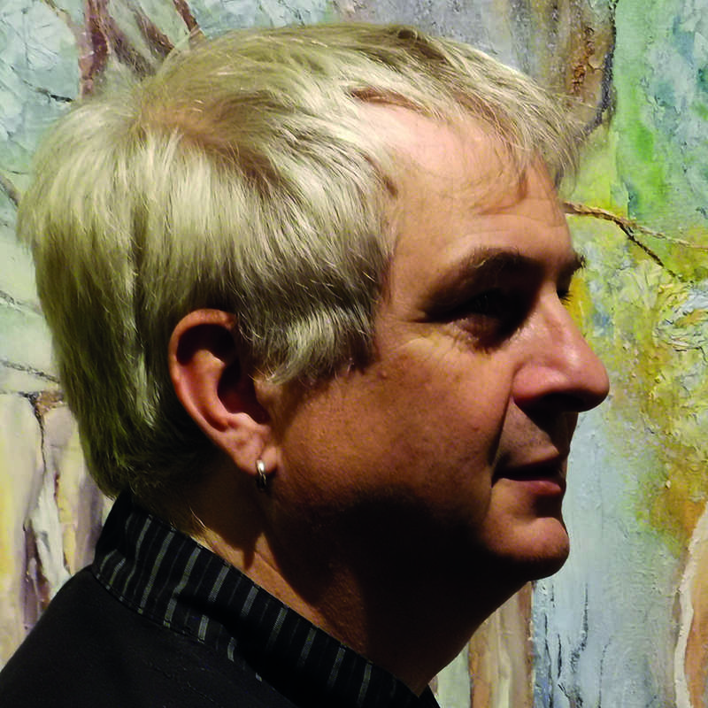
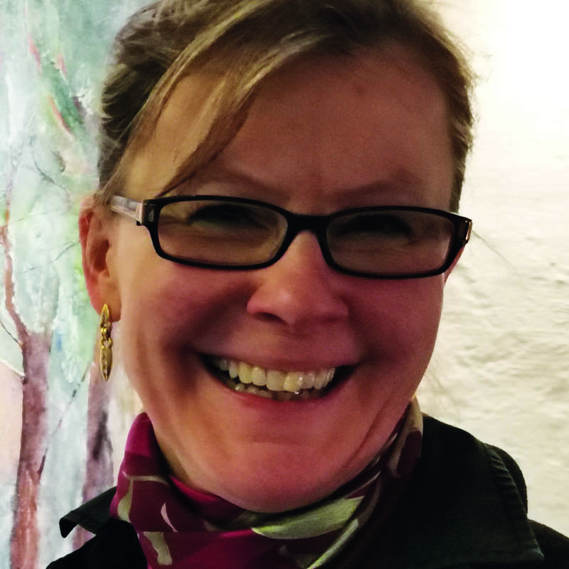
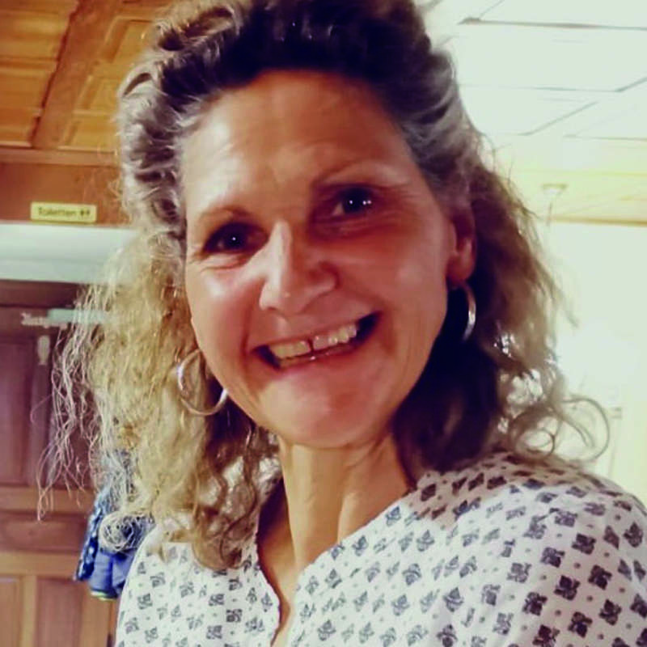
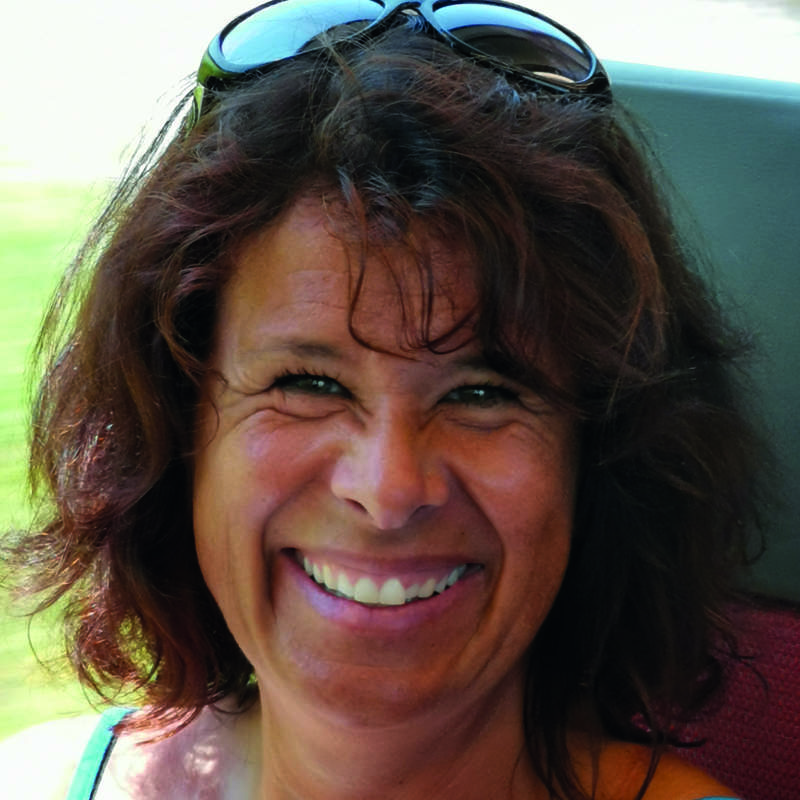
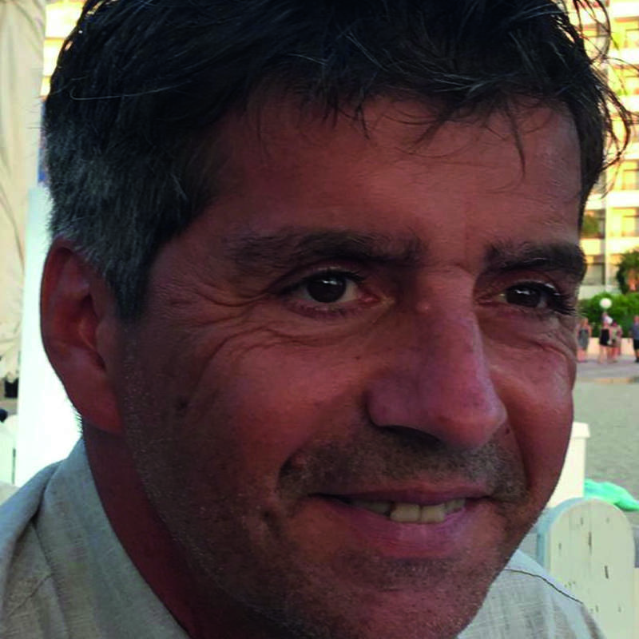
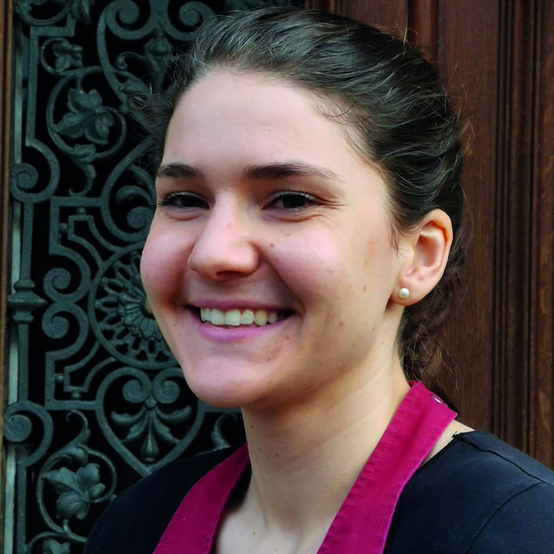
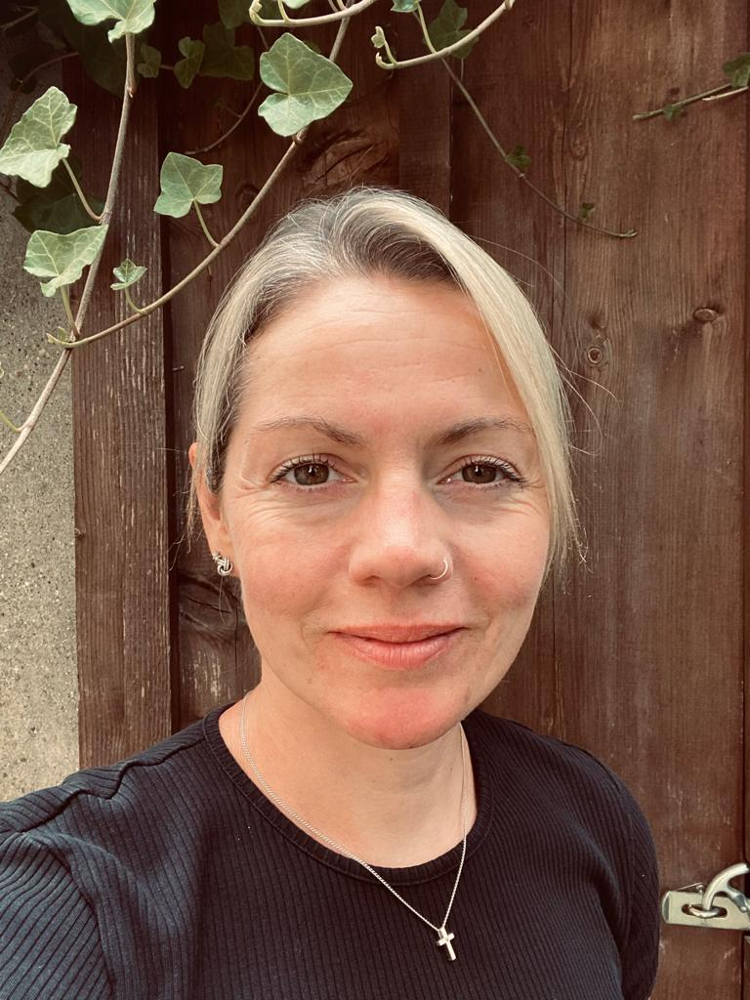

Mit Leidenschaft und Handwerk sorgen wir jeden Tag aufs Neue für einen schönen Aufenthalt in der Alten Mühle.

Gelernter Koch & Hotelfachschulabsolvent in Zürich. Nach Wanderjahren am Herd mit Wintersaisons und verschiedenen Stellen als Geschäftsführer, stand ich vor der Übernahme der Müli 16 Jahre im Geeren Gockhausen an der Front und leitete ein grosses Team. Seit anfangs 2008 schwinge ich hier in der Müli hauptsächlich wieder den Kochlöffel und kümmere mich gleichzeitig um das Wohl unserer Gäste.

Gelernter Koch & Servicefachfrau. Nach kurzer Zeit in der Küche habe ich die Fronten gewechselt. Nach Winteraufenthalten und einigen Stellen im Unterland habe ich nach 9 Jahren als rechte Hand des Chefs im Dübelstein Dübendorf im Jahre 2008 die jetzige Herausforderung angenommen. Nebst dem Wohl der Gäste kümmere ich mich um alles Gebackene & Süsse in unserem Betrieb.




